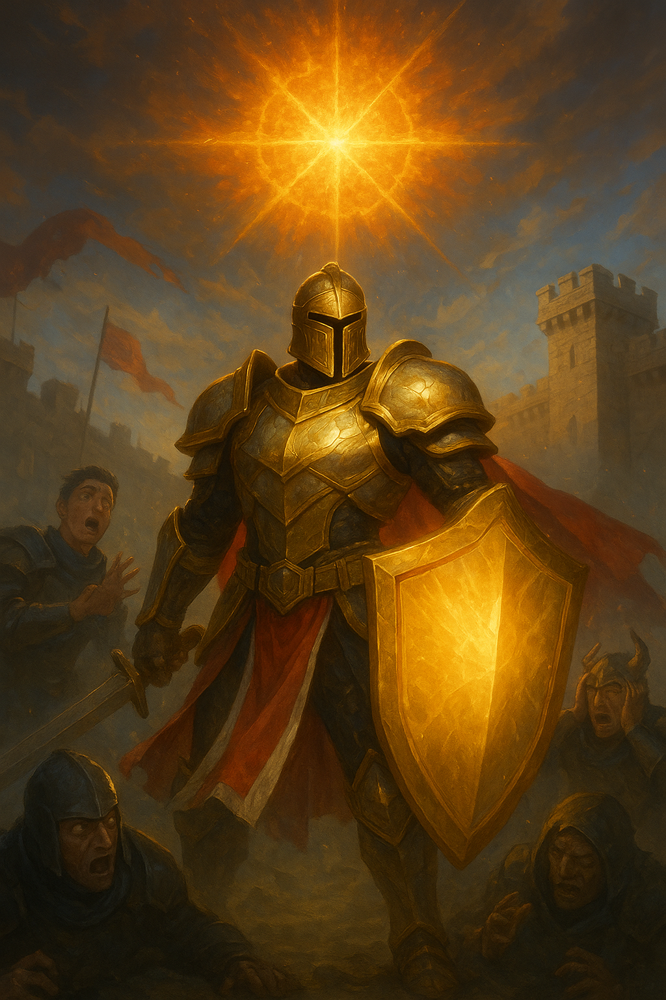
Skin 1 – Çevrimiçi Şövalye
Tam zırh ve kırmızı-beyaz pelerinle, takımının önünde disiplinli bir komutan gibi.
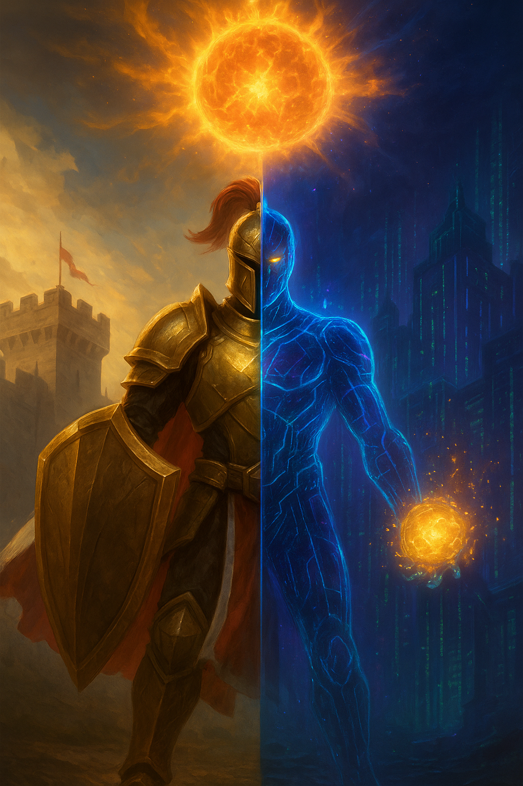
Dövüşçü / Hibrit Büyücü · Karma Hasar (AP+AD) · Zorluk: Yüksek

Tam zırh ve kırmızı-beyaz pelerinle, takımının önünde disiplinli bir komutan gibi.
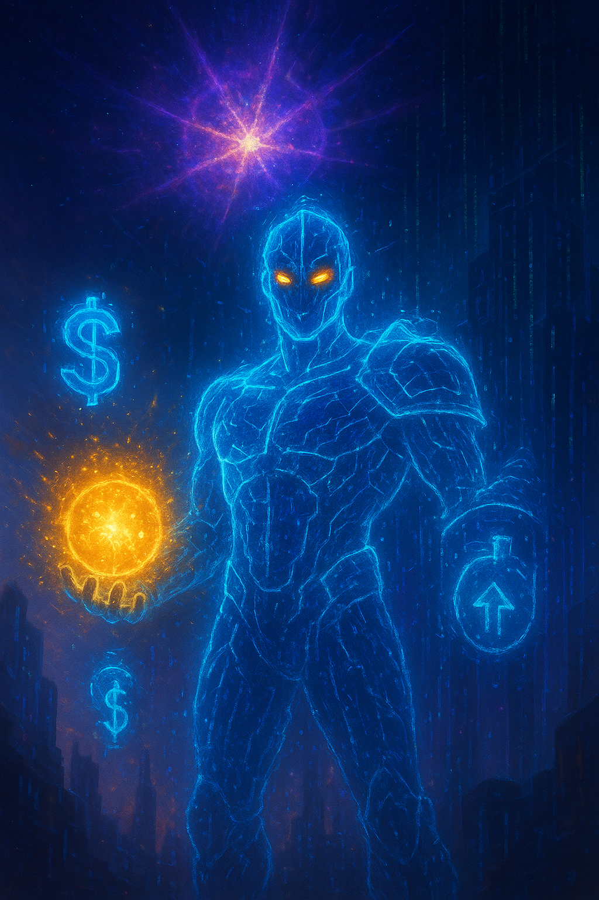
Neon ışıklı yarı saydam zırh, dijital glitch efektleri ve holografik semboller.
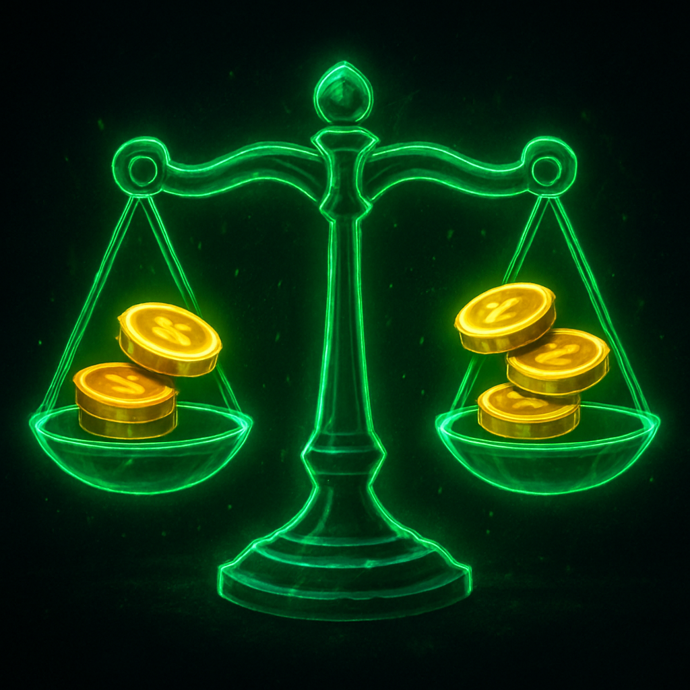
Gün sonunda pazara bıraktığı eşyaları satarak fazladan altın kazanır. Şövalye: Her 10 eşya satışında 2× altın. Efsane: Her 10 saniyede +3 altın (seviye ile artar).
Şövalye Q
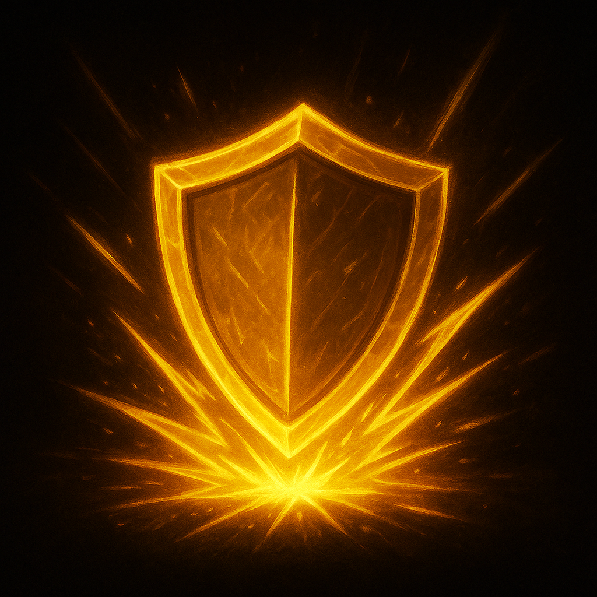
Efsane Q
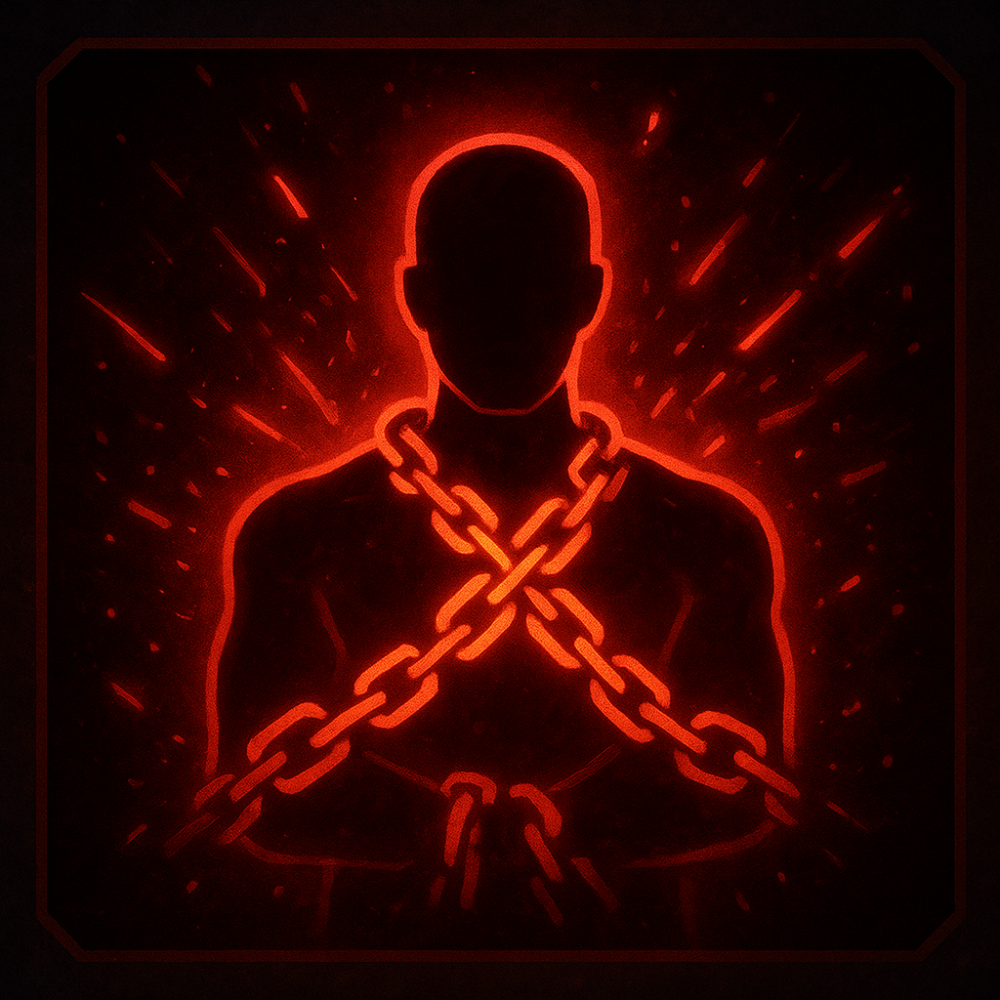
Hedefi 1 sn sersemletir, 10/35/60/85/110 + 0.35 AP büyü hasarı verir. Şövalye: Takım arkadaşının arkasına ışınlanır; en yakın 2 rakibi 0.5 sn sersemletir, 20/45/70/95/120 + 0.4 AP hasar. Efsane: Hedefi 2 sn kışkırtır; 15/40/65/90/115 + %1.5 İlave Can büyü hasarı.
Şövalye W
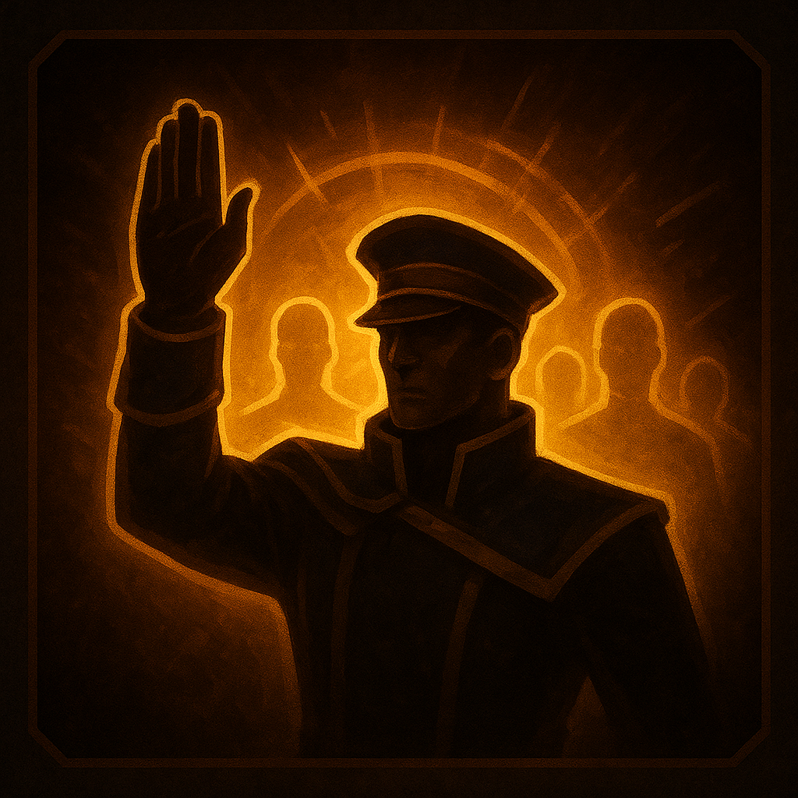
Efsane W
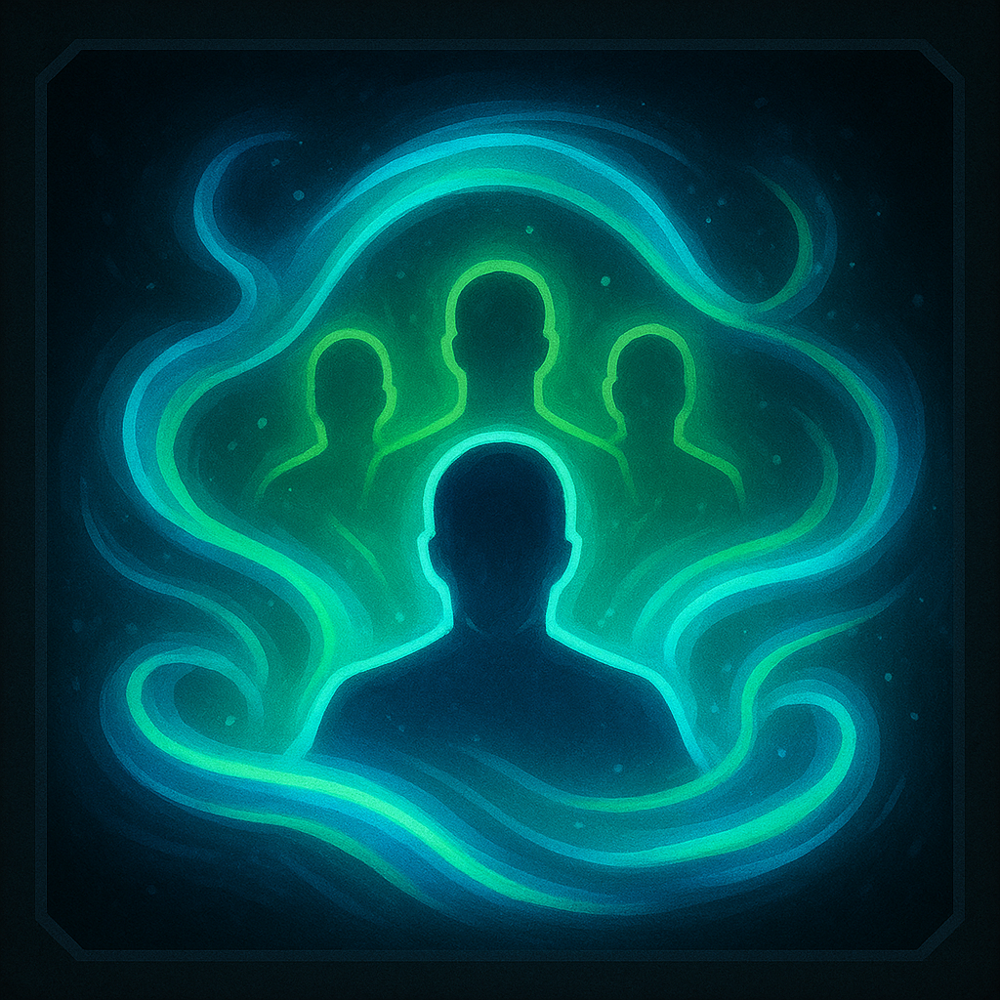
Kendisine ve takıma 20/25/30/35/40 Zırh/MR verir. Şövalye: Geniş alana yayılır; savaş kazanma oranı %30 artar, +5/20/35/50/65 AD. Efsane: Takıma verilen değerler 30/35/40/45/50 olur.
Şövalye E
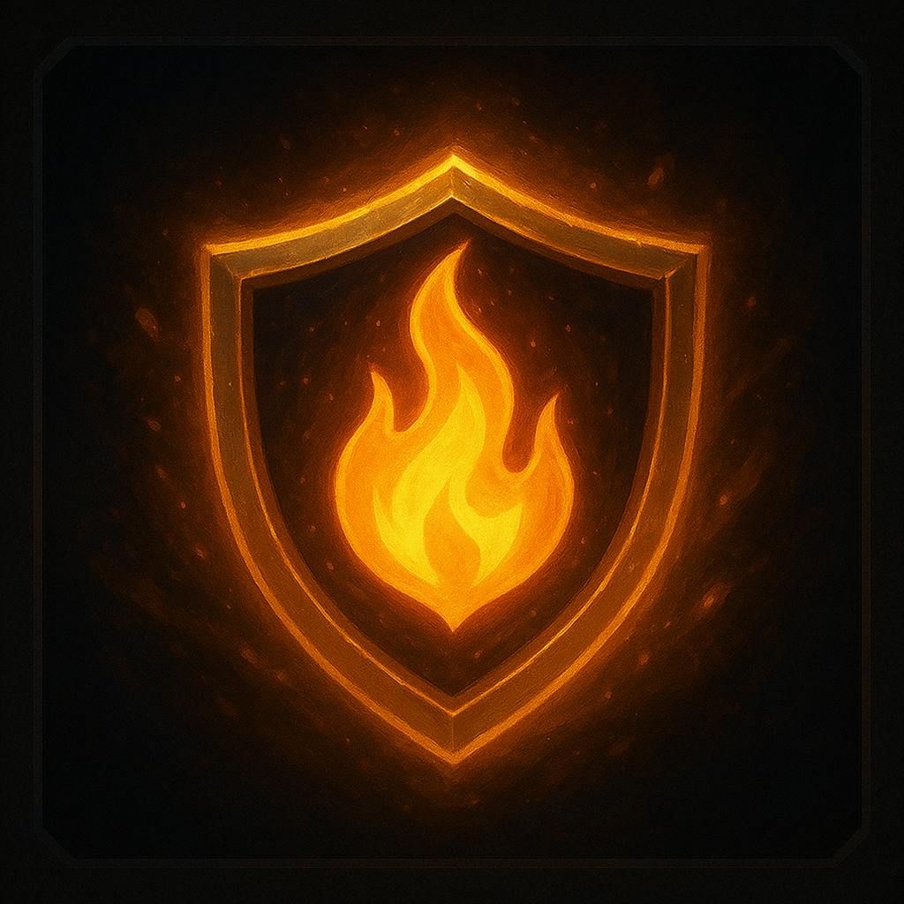
Efsane E
Takım arkadaşlarına flame atar, bonus güç kazanır. Şövalye: AFK/yanlış yapan her kişi için +0.5 AD, AP, Armor, MR. Efsane: Aydın ile bağ kurar; Aydın öldükçe 150 sn boyunca statlarının %1/3/6/10/15'ini çalar.
Şövalye R
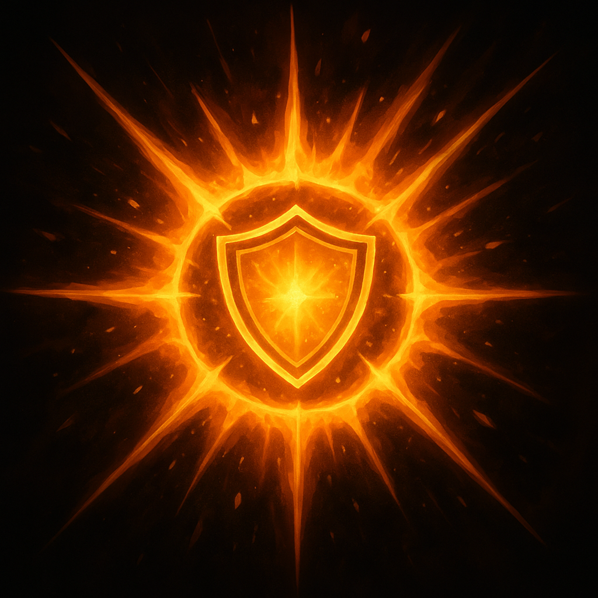
Efsane R
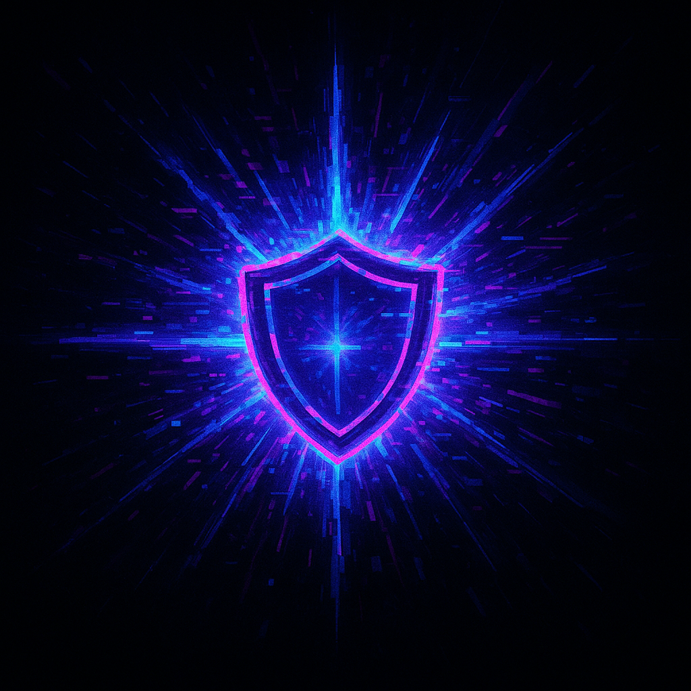
Alan etkili büyü: 150/250/350 + 0.8 AP hasar + sersemletme. Şövalye: Devasa yıldız fırlatır, 200/350/500 + 1.0 AP. Efsane: Vücudundaki güneş enerjisini salar, 175/275/375 + 0.9 AP.
Ercan Karakuyulu, sıradan bir oyuncunun ötesinde; günleri pazarlarda alışverişle, geceleri sanal savaş meydanlarında geçer. Çevrimiçi dünyalar onun için sadece bir oyun değildir: orada hem bir Şövalye, hem de bir Efsane olabilir. Şövalye olduğunda takımını savunur ve disiplinli bir lider gibi hareket eder. Efsane olduğunda kuralları lehine çevirir; rakiplerini provoke eder, gücünü dostlarının hatalarından bile besler. Ancak bir formu seçtiğinde diğerinin tüm özelliklerinden vazgeçer; onun benzersizliği, her savaşta yalnızca rakiplerini değil kaderini de şekillendirmesidir.